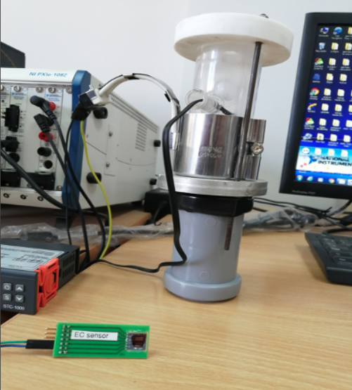

Non-invasive early stage lung cancer detection
Using nanotechnology and IoT devices, MedPoint has developed an early stage lung cancer detection hardware. Individuals simply need to breathe into this to determine whether or not they need to visit a hospital for lung cancer screening.
